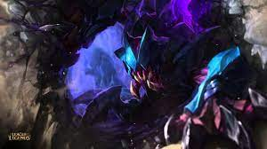

- 렉사이
- 리신
- 릴리아
렉사이
렉사이는 정글 라이너로서 아군의 라인에 개입하여 미니언을 먹기 쉽게 만들어주거나 상대팀 챔피언을 잡아냄으로서 아군 라이너에게 도움을 주는 역할을 합니다. 렉사이의 q스킬은 세번의 평타동안 렉사이가 돌며 렉사이가 때리는 대상은 물론 일정 주변범위의 적들에게까지 추가 피해를 입히는 스킬입니다.
이 스킬은 렉사이 정글링과 챔피언과의 싸움에서 가장 많은 데미지를 넣을 수 있게 해주는 핵심스킬이라고 할 수 있습니다. 또한 3번 평타동안 추가피해를 입히는 이 스킬의 특성상 칼날비 룬과 궁합이 잘 맞습니다.
